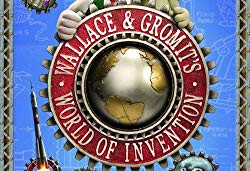
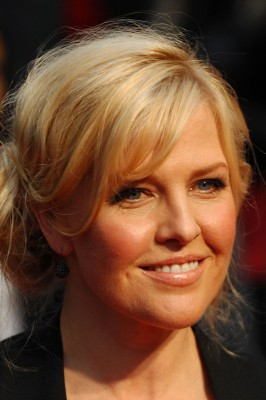

#12241 Wallace & Gromit's Welt der Erfindungen
Alternativ: Wallace and Gromit's World of Invention (Englischer Titel)
Auszeichnungen: 1 BAFTA-Awards gewonnen
 
 IMDB-Wertung: 7.4 / 10
IMDB-Wertung: 7.4 / 10  Metascore: 0
Metascore: 0 
Wallace introduces correspondents, inventors and experts who explain various real-life contraptions, inventions and scientific accomplishments.
Jahr: 2010
Dauer: 29 Minuten
FSK:
Land: England Studio: Super RTLTonspuren:
Untertitel:
Auflösung: SD (672x368) Größe: 427 MB
Genre: Komödie, Animation/Trick, Familie, Dokumentation
Regisseur: Merlin Crossingham
Drehbuch: Bob Baker, Richard Hansom, Nick Park, Alex Pascall, John Sparkes
Soundtrack:
Darsteller:
- Peter Sallis als Wallace, 6 episodes, 2010
-  Ashley Jensen als Herself - Narrator, 6 episodes, 2010
- William Kamkwamba als Himself - Inventor, 1 episode, 2010
- Jem Stansfield als Himself - Science Correspondent, 6 episodes, 2010
- John Sparkes als Goronwy, 6 episodes, 2010
- Maggie Aderin-Pocock als Herself - Optics Expert, 1 episode, 2010
- James Auger als Himself - Designer, 1 episode, 2010
- Bill Ayrey als Himself - Spacesuit Historian, 1 episode, 2010
- Trevor Baylis als Himself - Inventor, 1 episode, 2010
- Steve Bennett als Himself - Rocket Engineer, 1 episode, 2010
- Alan Bodner als Himself - Inventor, 1 episode, 2010
- Emily Cummins als Herself - Inventor, 1 episode, 2010
- Fred Ferguson als Himself - Inventor of the Magenn Air Rotor, 1 episode, 2010
- Markus Fischer als Himself - Head of Bionics, Festo, 1 episode, 2010
- Anne Fisher als Herself - Arthur Pedrick's Neighbour, 1 episode, 2010
- Peter Fisher als Himself - Arthur Pedrick's Neighbour, 1 episode, 2010
- Charles Osmond Frederick als Himself - Engineer, 1 episode, 2010
- Tim Gale als Himself - Medical Engineering Expert, 1 episode, 2010
- Del Hall als Himself - Escape Systems Technician, 1 episode, 2010
- Adam Hart als Himself - Bee Scientist, 1 episode, 2010
- Stefan Hartmaier als Himself - Mesmer Foundation, 1 episode, 2010
- Colin Hill als Himself - Pigeon Keeper, 1 episode, 2010
- Robert Hulse als Himself - Brunel Expert, 1 episode, 2010
- Theo Jansen als Himself - Kinetic Sculptor, 1 episode, 2010
- Mark Lesek als Himself - Engineer, 1 episode, 2010
- Bob Lochte als Himself - Communications Expert, 1 episode, 2010
- Craig Lundberg als Himself, 1 episode, 2010
- Cedric Lynch als Himself - Inventor, 1 episode, 2010
- Chris Melhuish als Himself - Bristol Robotics, 1 episode, 2010
- Günther Mugrauer als Himself - Engineer Festo, 1 episode, 2010
- Rainer Mugrauer als Himself - Engineer Festo, 1 episode, 2010
- Leik Myrabo als Himself - Lightcraft Scientist, 1 episode, 2010
- Dava Newman als Herself - Aerospace Engineer, MIT, 1 episode, 2010
- Sheridan Parsons als Herself - Teasmade Collector, 1 episode, 2010
- John Pendry als Himself - Theoretical Physicist, 1 episode, 2010
- Craig Penrice als Himself - Test Pilot, 1 episode, 2010
- Mikhail Puchkov als Himself - Inventor, 1 episode, 2010
- George the Robot als Itself, 1 episode, 2010
- Stuart Ross als Himself - Jetpack Enthusiast, 1 episode, 2010
- Tony Sale als Himself - Inventor, 1 episode, 2010
- Clive Sinclair als Himself - Inventor, 1 episode, 2010
- Rupert Soar als Himself - Loughborough University, 1 episode, 2010
- Brian Spear als Himself - Retired Patent Examiner, IPO, 1 episode, 2010
Datei: X:\Kinder Collections\Wallace & Gromit\Wallace & Gromit's Welt der Erfindungen (2010, FSK, 672x368).avi seit 31.12.2019
Festplatte: Kinder-Filme+Trick
 Es gibt insgesamt 10 Filme in der Gruppe 'Kinder Collections\Wallace & Gromit'
Es gibt insgesamt 10 Filme in der Gruppe 'Kinder Collections\Wallace & Gromit'